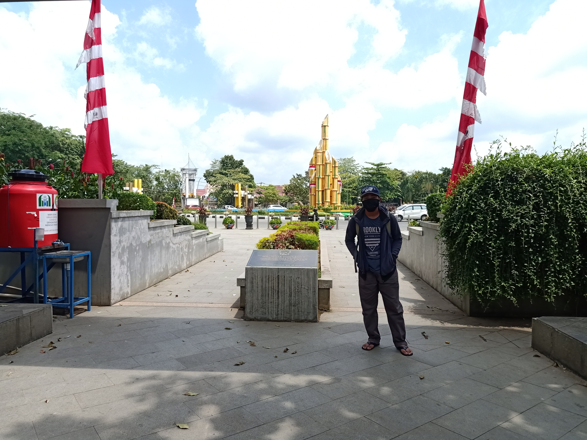

Taman Digulis ini terletak di bagian tenggara Tugu Digulis dan mengingatkan masyarakat yang melintas bahwa tugu yang mereka lewati adalah “Tugu Digulis” serta masyarakat Kota Pontianak diajak mengenang jasa Pahlawan dari didirikannya tugu tersebut dalam masa penjajahan sehingga Kota Pontianak bahkan Indonesia dapat merdeka hingga saat ini. Tugu Digulis biasa juga disebut Monumen Sebelas Digulis Kalimantan Barat atau Tugu Bambu Runcing sudah direnovasi sebanyak tiga kali pada tahun 2004 tugu ini masih berwarna merah putih, kemudian di tahun 2010 tugu ini dicat kembali menyeruapi tanaman bambu yang asli yakni kuning dengan garis hijau, nah sekarang 2015 tugu digulis masih dengan warna yang sama hanya saja diberi sentuhan air mancur dengan lampu-lampu yang sangat indah. Tugu digulis pertama kali diresmikan oleh Gubernur Kalimantan Barat H. Soedjiman pada 10 November 1987.
Monumen ini didirikan sebagai peringatan atas perjuangan sebelas tokoh Sarekat Islam di Kalimantan Barat, yang dibuang ke Boven Digoel, Irian Barat karena karena khawatir pergerakan mereka akan memicu pemberontakan terhadap pemerintah Hindia Belanda di Kalimantan. Tiga dari sebelas tokoh tersebut meninggal pada saat pembuangan di Boven Digoel dan lima diantaranya wafat dalam peristiwa mandor. Nama-nama kesebelas tokoh tersebut kini diabadikan juga sebagai nama jalan di Kota Pontianak seperi Achmad Marzuki, Achmad Su’ud, Gusti Johan Idrus, Gusti Hamzah, Gusti Muhammad Situt Machmud, Gusti Soeloeng Lelanang, Jeranding Abdurah,am. H.R. Abdurahman, H.Rais, Muhammad Hambal, Muhammad Sohor, dan Ya’ Moehammad Sabran.